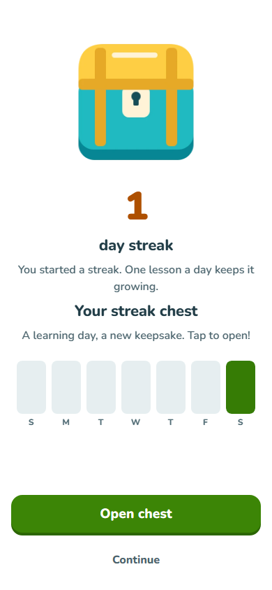
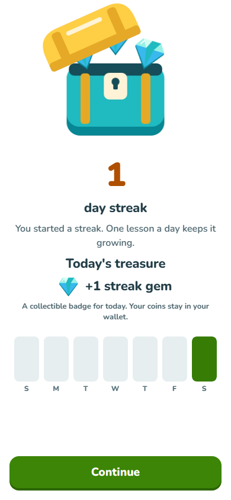
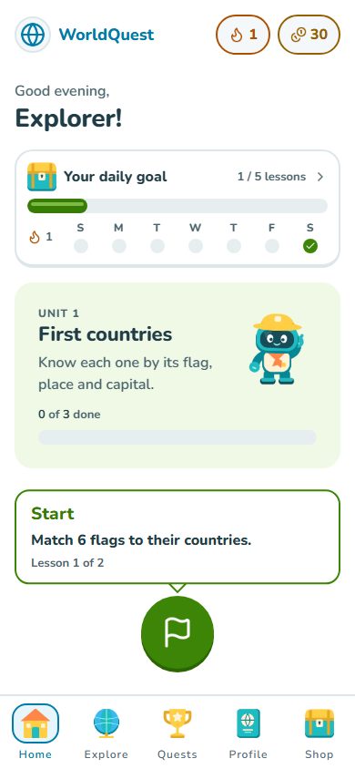
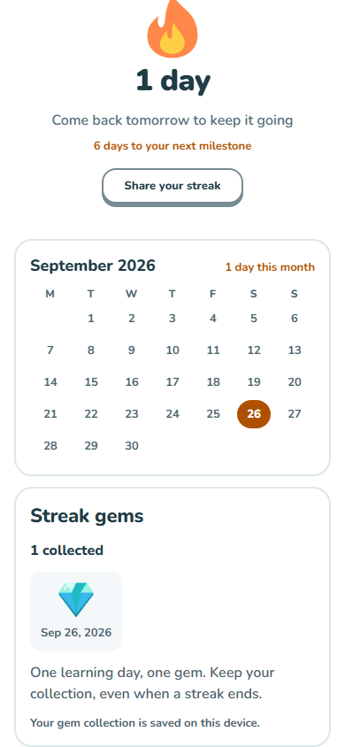

Coins remain the spendable currency. The daily chest reveals a keepsake, stored per account on this device. Collected gems stay after a streak ends.




The browser review completed a lesson, sampled the animated lid, checked reduced motion, reloaded, and verified one saved gem. Verification data. Native-device performance and screen-reader testing remain outstanding.